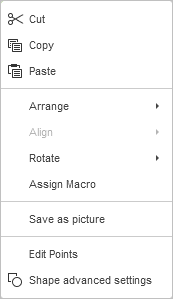
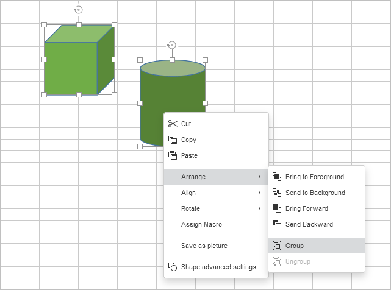

Manipulisanje objektima
U Uređivaču tabela možete menjati veličinu, pomerati, rotirati i raspoređivati automatske oblike, slike i grafikone umetnute u radni list.
Napomena: lista prečica na tastaturi koje se mogu koristiti pri radu sa objektima dostupna je ovde.
Promena veličine objekata
Da biste promenili veličinu automatskog oblika/slike/grafikona, prevucite male kvadratiće koji se nalaze na ivicama objekta. Da biste zadržali originalne proporcije izabranog objekta prilikom promene veličine, držite pritisnut taster Shift i prevucite jednu od ikona u uglovima.
Napomena: da biste promenili veličinu umetnutog grafikona ili slike, možete koristiti i desnu bočnu traku koja će se aktivirati kada izaberete potrebni objekat. Da biste je otvorili, kliknite na ikonu Podešavanja grafikona ili Podešavanja slike sa desne strane.
Pomeranje objekata
Da biste promenili poziciju automatskog oblika/slike/grafikona, koristite ikonu Strelica koja se pojavljuje kada pređete kursorom miša preko objekta. Prevucite objekat na željenu poziciju bez puštanja tastera miša. Da biste pomerali objekat u koracima od jednog piksela, držite pritisnut taster Ctrl i koristite strelice na tastaturi. Da biste pomerali objekat striktno horizontalno/vertikalno i sprečili pomeranje u upravnom smeru, držite pritisnut taster Shift dok prevlačite.
Rotiranje objekata
Da biste ručno rotirali automatski oblik/sliku, pređite kursorom miša preko ručke za rotaciju i prevucite je u smeru kazaljke na satu ili suprotno. Da biste ograničili ugao rotacije na korake od 15 stepeni, držite pritisnut taster Shift tokom rotiranja.
Da biste rotirali oblik ili sliku za 90 stepeni ulevo/udesno ili okrenuli objekat horizontalno/vertikalno, možete koristiti odeljak Rotacija na desnoj bočnoj traci koja će se aktivirati kada izaberete potrebni objekat. Da biste je otvorili, kliknite na ikonu Podešavanja oblika ili ikonu Podešavanja slike sa desne strane. Kliknite na jedno od dugmadi:
- da biste rotirali objekat za 90 stepeni suprotno smeru kazaljke na satu
- da biste rotirali objekat za 90 stepeni u smeru kazaljke na satu
- da biste okrenuli objekat horizontalno (sleva nadesno)
- da biste okrenuli objekat vertikalno (naopako)
Takođe je moguće kliknuti desnim tasterom miša na sliku ili oblik, izabrati opciju Rotiraj iz kontekstnog menija i zatim koristiti jednu od dostupnih opcija rotacije.
Da biste rotirali oblik ili sliku pod tačno određenim uglom, kliknite na vezu Prikaži napredna podešavanja na desnoj bočnoj traci i koristite karticu Rotacija u prozoru Napredna podešavanja. Unesite potrebnu vrednost izraženu u stepenima u polje Ugao i kliknite na OK.
Preoblikovanje automatskih oblika
Prilikom izmene nekih oblika, na primer oblikovanih strelica ili oblačića (Callouts), dostupna je i žuta ručka u obliku romba . Ona omogućava podešavanje određenih aspekata oblika, na primer dužine vrha strelice.
Da biste preoblikovali automatski oblik, možete koristiti i opciju Uredi tačke iz kontekstnog menija.
Opcija Uredi tačke služi za prilagođavanje ili promenu zakrivljenosti oblika.
-
Da biste aktivirali tačke sidra oblika koje se mogu uređivati, kliknite desnim tasterom miša na oblik i izaberite Uredi tačke iz menija. Crni kvadratići koji postanu aktivni predstavljaju tačke gde se dve linije spajaju, a crvena linija ocrtava oblik. Kliknite i prevucite da biste promenili položaj tačke i izmenili konturu oblika.

-
Kada kliknete na tačku sidra, pojaviće se dve plave linije sa belim kvadratićima na krajevima. To su Bezijerove ručke koje omogućavaju kreiranje krive i podešavanje glatkoće krive.
-
Dok su tačke sidra aktivne, možete ih dodavati i brisati:
- Da biste dodali tačku na oblik, držite Ctrl i kliknite na mesto gde želite da dodate tačku sidra.
- Da biste obrisali tačku, držite Ctrl i kliknite na nepotrebnu tačku.
Poravnanje objekata
Da biste poravnali dva ili više izabranih objekata jedan u odnosu na drugi, držite pritisnut taster Ctrl dok birate objekte mišem, zatim kliknite na ikonu Poravnaj na kartici Raspored gornje trake sa alatkama i izaberite potrebnu vrstu poravnanja sa liste:
- Poravnaj levo – poravnava objekte jedan u odnosu na drugi prema levoj ivici najlevljeg objekta,
- Poravnaj po sredini – poravnava objekte jedan u odnosu na drugi u centru,
- Poravnaj desno – poravnava objekte jedan u odnosu na drugi prema desnoj ivici najdesnijeg objekta,
- Poravnaj gore – poravnava objekte jedan u odnosu na drugi prema gornjoj ivici najvišeg objekta,
- Poravnaj po sredini – poravnava objekte jedan u odnosu na drugi po sredini,
- Poravnaj dole – poravnava objekte jedan u odnosu na drugi prema donjoj ivici najnižeg objekta.
Alternativno, možete kliknuti desnim tasterom miša na izabrane objekte, izabrati opciju Poravnaj iz kontekstnog menija i zatim koristiti jednu od dostupnih opcija poravnanja.
Napomena: opcije poravnanja su onemogućene ako izaberete manje od dva objekta.
Raspoređivanje objekata
Da biste rasporedili tri ili više izabranih objekata horizontalno ili vertikalno između dva krajnja izabrana objekta tako da rastojanje između njih bude jednako, kliknite na ikonu Poravnaj na kartici Raspored gornje trake sa alatkama i izaberite potrebnu vrstu raspoređivanja sa liste:
- Rasporedi horizontalno – ravnomerno raspoređuje objekte između najlevljeg i najdesnijeg izabranog objekta.
- Rasporedi vertikalno – ravnomerno raspoređuje objekte između najvišeg i najnižeg izabranog objekta.
Alternativno, možete kliknuti desnim tasterom miša na izabrane objekte, izabrati opciju Poravnaj iz kontekstnog menija i zatim koristiti jednu od dostupnih opcija raspoređivanja.
Napomena: opcije raspoređivanja su onemogućene ako izaberete manje od tri objekta.
Grupisanje više objekata
Da biste manipulisali više objekata odjednom, možete ih grupisati. Držite pritisnut taster Ctrl dok birate objekte mišem, zatim kliknite na strelicu pored ikone Grupiši na kartici Raspored gornje trake sa alatkama i izaberite potrebnu opciju sa liste:
- Grupiši – kombinuje više objekata u grupu tako da se mogu istovremeno rotirati, pomerati, menjati veličinu, poravnavati, raspoređivati, kopirati, nalepiti i formatirati kao jedan objekat.
- Razgrupiši – razgrupiše izabranu grupu prethodno kombinovanih objekata.
Alternativno, možete kliknuti desnim tasterom miša na izabrane objekte, izabrati opciju Rasporedi iz kontekstnog menija i zatim koristiti opciju Grupiši ili Razgrupiši.
Napomena: opcija Grupiši je onemogućena ako izaberete manje od dva objekta. Opcija Razgrupiši je dostupna samo kada je izabrana grupa prethodno kombinovanih objekata.

Raspoređivanje više objekata
Da biste rasporedili izabrani objekat ili više objekata (npr. da biste promenili njihov redosled kada se više objekata preklapa), možete koristiti ikone Pomeri napred i Pomeri nazad na kartici Raspored gornje trake sa alatkama i izabrati potrebnu vrstu raspoređivanja sa liste.
Da biste pomerili izabrani objekat(e) napred, kliknite na strelicu pored ikone Pomeri napred na kartici Raspored gornje trake sa alatkama i izaberite potrebnu vrstu raspoređivanja sa liste:
- Pomeri na vrh – pomera objekat(e) ispred svih ostalih objekata,
- Pomeri napred – pomera izabrani objekat(e) za jedan nivo napred u odnosu na druge objekte.
Da biste pomerili izabrani objekat(e) unazad, kliknite na strelicu pored ikone Pomeri nazad na kartici Raspored gornje trake sa alatkama i izaberite potrebnu vrstu raspoređivanja sa liste:
- Pošalji u pozadinu – pomera objekat(e) iza svih ostalih objekata,
- Pomeri nazad – pomera izabrani objekat(e) za jedan nivo unazad u odnosu na druge objekte.
Alternativno, možete kliknuti desnim tasterom miša na izabrani objekat(e), izabrati opciju Rasporedi iz kontekstnog menija i zatim koristiti jednu od dostupnih opcija raspoređivanja.
Bulove operacije nad oblicima
Da biste pristupili logičkim operacijama nad oblicima, izaberite stavku menija Spoji oblike u kontekstnom meniju. Bulove operacije obuhvataju sledeće:
- Unija – oblici će biti spojeni u jednu grupu i deliće jednu oblast.
- Kombinuj – oblici će biti spojeni u jednu grupu, ali će zajednička oblast biti istaknuta.
- Fragmentiraj – oblici će biti spojeni u jednu grupu, ali će zajednička oblast biti ocrtana.
- Presek – kreira novi oblik od oblasti u kojima se izabrani oblici preklapaju.
- Oduzmi – uklanja oblast oblika iz oblika koji se nalazi ispod njega.